Evaluating AVATAR on public data
Andrew Stein
Source:vignettes/public-data-examples.Rmd
public-data-examples.RmdThis vignette compares eight source datasets against their synthetic
counterparts generated by synpmx_avatar().
Plotting helpers used throughout this vignette
observed_plot_data <- function(data, roles, dataset,
clock = "study_time") {
observed <- as.character(data[[roles$evid]]) %in% c("0", "0.0")
if (!is.null(roles$mdv)) {
observed <- observed & as.character(data[[roles$mdv]]) %in% c("0", "0.0")
}
observed <- observed & !is.na(data[[roles$dv]])
observation_rows <- which(observed)
occasion <- rep(1L, length(observation_rows))
tad <- rep(NA_real_, length(observation_rows))
if (!is.null(roles$occasion)) {
declared <- suppressWarnings(as.integer(
data[[roles$occasion]][observation_rows]
))
valid <- !is.na(declared) & declared >= 1L
occasion[valid] <- declared[valid]
}
if (!is.null(roles$tad)) {
declared <- suppressWarnings(as.numeric(data[[roles$tad]][observation_rows]))
valid <- is.finite(declared)
tad[valid] <- pmax(0, declared[valid])
}
subject_values <- data[[roles$id]]
for (id in unique(subject_values[observation_rows])) {
subject_rows <- which(!is.na(subject_values) & subject_values == id)
events <- !(as.character(data[[roles$evid]][subject_rows]) %in%
c("0", "0.0"))
if (!is.null(roles$amt)) {
events <- events & as.numeric(data[[roles$amt]][subject_rows]) > 0
}
positions <- which(subject_values[observation_rows] == id)
event_rows <- subject_rows[events]
if (length(event_rows) && !is.null(roles$occasion)) {
event_occasion <- suppressWarnings(as.integer(
data[[roles$occasion]][event_rows]
))
for (position in positions) {
candidates <- event_rows[event_occasion == occasion[position]]
if (length(candidates) && !is.finite(tad[position])) {
origin <- min(as.numeric(data[[roles$time]][candidates]))
tad[position] <-
as.numeric(data[[roles$time]][observation_rows[position]]) - origin
}
}
} else if (length(event_rows)) {
dose_times <- sort(unique(as.numeric(data[[roles$time]][event_rows])))
occasion[positions] <- pmax(1L, findInterval(
as.numeric(data[[roles$time]][observation_rows[positions]]),
dose_times
))
occasion[positions] <- pmin(occasion[positions], length(dose_times))
tad[positions] <-
as.numeric(data[[roles$time]][observation_rows[positions]]) -
dose_times[occasion[positions]]
}
}
plotted_time <- if (identical(clock, "tad")) tad else
as.numeric(data[[roles$time]][observation_rows])
data.frame(
dataset = factor(dataset, levels = c("Source", "Synthetic")),
subject = as.character(data[[roles$id]][observation_rows]),
time = plotted_time,
dv = as.numeric(data[[roles$dv]][observation_rows]),
occasion = occasion,
endpoint = if (is.null(roles$dvid)) "DV" else
as.character(data[[roles$dvid]][observation_rows]),
stringsAsFactors = FALSE
)
}
# Every dataset below gets the same figure: observation rows only, source beside
# synthetic on a shared y axis, one row per endpoint. `clock = "tad"` plots time
# after dose instead of study time, which is the readable view once a study
# doses more than once.
overlay_plot <- function(source, synthetic, roles, title,
clock = "study_time",
x_label = "Study time (hours)", y_label = "DV",
log_y = FALSE, alpha = 0.3) {
plotted <- rbind(
observed_plot_data(source, roles, "Source", clock),
observed_plot_data(synthetic, roles, "Synthetic", clock)
)
# One line per patient on a study-time axis, and one line per occasion on a
# dose-relative one, where the profiles are meant to lie on top of each other.
plotted$series <- if (identical(clock, "tad")) {
interaction(plotted$dataset, plotted$subject, plotted$occasion)
} else {
interaction(plotted$dataset, plotted$subject)
}
figure <- ggplot2::ggplot(
plotted,
ggplot2::aes(time, dv, group = series, colour = dataset)
) +
ggplot2::geom_line(alpha = alpha) +
ggplot2::geom_point(alpha = alpha, size = 0.7) +
# Endpoint down the side, source and synthetic across. `facet_grid()` frees
# a scale per ROW, so this orientation is the one that gives each endpoint
# its own y while holding source and synthetic on a shared one -- which is
# the only arrangement the eye can compare. The transpose does the opposite
# on both counts: it lets the two panels drift onto different axes, and it
# squeezes every endpoint onto one, so a PK concentration reading single
# digits flattens to a line next to a PD score in the hundreds.
#
# A single-endpoint study needs no row strip; it would print the endpoint's
# name down the side of the only row, beside the axis title already naming
# the same thing.
(if (length(unique(plotted$endpoint)) > 1L) {
ggplot2::facet_grid(endpoint ~ dataset, scales = "free_y",
switch = "y")
} else {
ggplot2::facet_wrap(~dataset)
}) +
ggplot2::scale_colour_manual(values = comparison_colours) +
ggplot2::labs(x = x_label, y = y_label, colour = "Dataset", title = title) +
ggplot2::theme_minimal() +
ggplot2::theme(legend.position = "none",
strip.placement = "outside")
if (isTRUE(log_y)) figure + ggplot2::scale_y_log10() else figure
}
# Facet rows are endpoints now, so a five-endpoint study needs five times the
# height a one-endpoint study does. Chunks pass this to `fig.height` rather than
# every figure inheriting the one-endpoint default and arriving unreadable.
overlay_height <- function(data, roles, per_endpoint = 2.2, minimum = 3.4) {
observed <- as.character(data[[roles$evid]]) %in% c("0", "0.0")
endpoints <- if (is.null(roles$dvid)) 1L else {
length(unique(data[[roles$dvid]][observed]))
}
max(minimum, per_endpoint * endpoints)
}
# The masking accounting for one run. `pmx_masking_report()` owns the row labels
# and the explanation next to each one, so this vignette and the study reports
# under `scripts_private/` cannot drift apart; only the caption is local.
#
# `section` is what keeps these tables readable. The whole report is thirty-odd
# rows -- the right size to read once after a run, and the wrong size under a
# paragraph making one point about one mechanism, where the five rows it is
# discussing arrive buried in twenty-eight it is not.
masking_table <- function(source, roles, synthetic, label, section = NULL) {
knitr::kable(
as.data.frame(pmx_masking_report(synthetic, source, roles,
section = section)),
row.names = FALSE, align = c("l", "r", "l"),
caption = paste0(
"What ", label, "'s run removed",
if (is.null(section)) ", and what was left to build on." else
paste0(", on the ",
paste0("`", section, "`", collapse = " and "),
" side. `pmx_masking_report()` without `section` prints all of it.")
)
)
}The datasets
Every dataset here is public package data from
nlmixr2data or xgxr, both
Suggests of this package.
| Dataset | Package | Patients | Rows | Endpoints | What it is here to exercise |
|---|---|---|---|---|---|
case1_pkpd |
xgxr | 180 | 20820 | 2 | Six arms, a declared NOMTIME, PK and PD, baseline
weight, CENS. The shape a study report usually arrives
in |
mad |
xgxr | 60 | 4160 | 5 | Multiple ascending dose carrying ordinal, count and binary PD alongside continuous PD and PK |
theo_md |
nlmixr2data | 12 | 348 | 1 | Seven Q24H oral doses with dense profiles on occasions 1 and 7 only. Dosed by weight. |
warfarin |
nlmixr2data | 32 | 515 | 2 | One dose, PK and PD running on different time courses, categorical covariates |
wbcSim |
nlmixr2data | 45 | 280 | 1 | Infusion start/stop pairs and a delayed WBC response. Follow-up time varies. |
nimoData |
nlmixr2data | 12 | 441 | 1 | Ten roughly weekly infusions, recorded at the times they happened |
mavoglurant |
nlmixr2data | 120 | 2678 | 1 | One- and two-period crossover, TIME resetting within
OCC, an occasion-varying assigned dose, infusion rows. |
pheno_sd |
nlmixr2data | 59 | 744 | 1 | Neonatal phenobarbital, individualised dosing, sparse irregular sampling, time-varying weight. |
None of these datasets uses steady state, ADDL,
or II. Every dose is written out as its own row,
so the handling of compressed dose records is exercised by the package’s
tests rather than by anything below.
Shared workflow
Every example follows the same five steps:
- declare column meanings with
pmx_roles(); - synthesize with
synpmx_avatar(); - plot the real and synthetic data;
- plot the observation (DV) and baseline covariate distributions, source against synthetic
- report the score card for the synthetic dataset.
The scorecard marks each check pass, FAIL,
or review. A review row is one where the
pharmacometrician could evaluate whether the output is acceptable for
use. If the synthetic dataset will not be crossing a trust boundary,
items marked review are acceptable.
No dataset here fails a check, which is a thing to
be careful about rather than reassured by. nimoData, on
B1b, previously failed, and its section shows what fixing the issue
involved. Every card carries five or six review rows
instead, and those are where the eight datasets actually differ. The
runs below are quiet: synpmx_avatar() prints an alert for
every exposure it could not remove, and eighteen of those blocks would
say what the scorecard and pmx_masking_report() say here in
tables.
case1_pkpd: a declared nominal grid
Start here: this is what a study report usually looks
like. 180 patients across six treatment arms, with a declared
NOMTIME, two endpoints keyed by a character
NAME column, a baseline weight, and a CENS
column — the industry shape, and the one the package is easiest on.
vignette("demo") runs this dataset end to end.
Almost everything passes, and the reason is the declared nominal
time: the protocol grid is written down, so coarsening reads it instead
of guessing at one. Keep that in mind through the six datasets after
mad, where most of the difficulty turns out to be its
absence.
case1_pkpd <- as.data.frame(
get(utils::data(list = "case1_pkpd", package = "xgxr"))
)
case1_roles <- pmx_roles(
id = "ID", time = "TIME", dv = "LIDV", amt = "AMT", evid = "EVID",
cmt = "CMT", dvid = "NAME", nominal_time = "NOMTIME",
strata = c("TRTACT", "DOSE"), covariates = "WEIGHTB",
keep = "STUDY"
)
case1_synth <- suppressWarnings(
synpmx_avatar(case1_pkpd, case1_roles, seed = 808)
)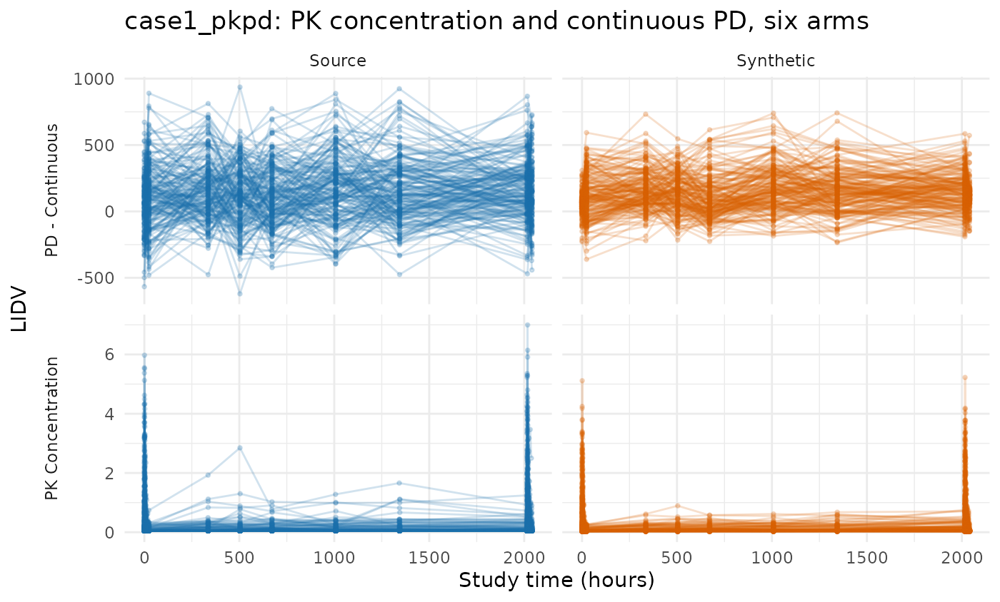
compare_pmx_distributions(case1_pkpd, case1_synth, case1_roles)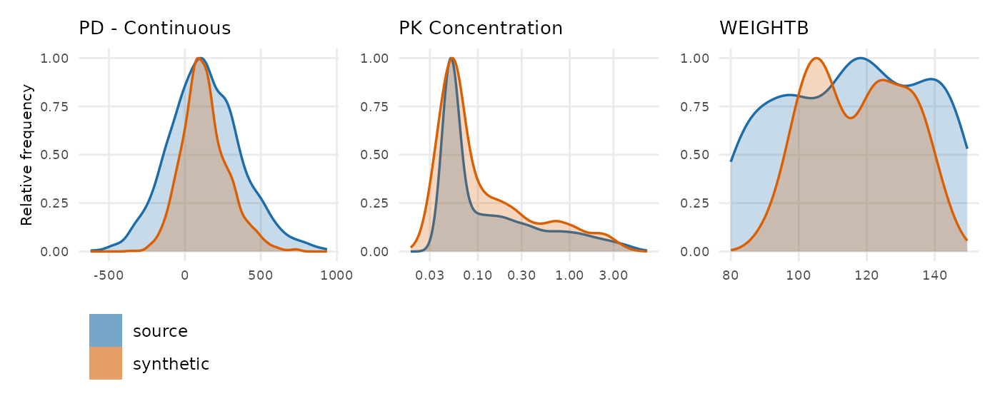
scorecard <- synpmx_scorecard(case1_pkpd, case1_synth, case1_roles)
synpmx_scorecard_datatable(scorecard)D1 reports numbers, not shapes. Plot source and synthetic on the same axes -- DV against time, and each covariate -- with whatever you normally use.
Nothing fails, and C1 passes: all six treatment arms keep their
source size. An avatar never leaves the arm it was anchored in, because
TRTACT and DOSE are declared as
strata and are copied from the anchor. The arm
sizes match because of a second mechanism: anchors are sampled
with replacement, so preserve_strata_balance (the default)
gives each stratum its source share rather than leaving the balance to
the draw. Only a declared stratum gets this; warfarin below
has a sex covariate that is never declared as one, and so
has no equivalent row.
All 180 patients start with an observation schedule nobody else
shares and none ends with one, and the difference from every dataset
that follows is one declared column. With NOMTIME present
the grid is nominal rather than derived, so coarsening
reads the protocol instead of guessing at it, 180 patients collapse onto
six visit sets, none of them rare, and nothing is discarded. Read this
next to nimoData, which is the same mechanism with nothing
to work from. The gap between them is not a tuning difference; it is
whether the study recorded a nominal time.
Declaring cens on this study is refused
case1_roles_cens <- pmx_roles(
id = "ID", time = "TIME", dv = "LIDV", amt = "AMT", evid = "EVID",
cmt = "CMT", dvid = "NAME", nominal_time = "NOMTIME", cens = "CENS",
strata = c("TRTACT", "DOSE"), covariates = "WEIGHTB"
)
validate_pmx(case1_pkpd, case1_roles_cens)$valid
#> [1] FALSEThat study’s CENS is meaningful only for the PK
endpoint. The PD effect is signed, so a left-censored PD row reports a
value above uncensored ones and the flag cannot mean what it means for
PK. Running validate_pmx() on the data you are about to
generate from is how a mis-declared role is caught before it becomes a
generation bug, and this is the dataset where it fires. Leaving
cens undeclared, as the run above does, is one right
answer; vignette("demo") takes the other and sets
CENS to 0 on the PD rows before declaring it.
mad: five endpoints, including ordinal, count and binary
The second xgxr set, and the other one shaped like a
study report: 60 subjects in a multiple-ascending-dose study with a
declared NOMTIME, five observation endpoints keyed by
NAME — PK concentration, continuous PD, and ordinal, count
and binary PD. Every other dataset here has one or two endpoints, and an
endpoint silently vanishing during generation is invisible with fewer
than three.
mad <- as.data.frame(get(utils::data(list = "mad", package = "xgxr")))
mad_roles <- pmx_roles(
id = "ID", time = "TIME", dv = "LIDV", amt = "AMT", evid = "EVID",
cmt = "CMT", dvid = "NAME", mdv = "MDV", nominal_time = "NOMTIME",
strata = c("TRTACT", "DOSE"),
covariates = c("WEIGHTB", "SEX")
)
mad_synth <- suppressWarnings(synpmx_avatar(mad, mad_roles, seed = 909))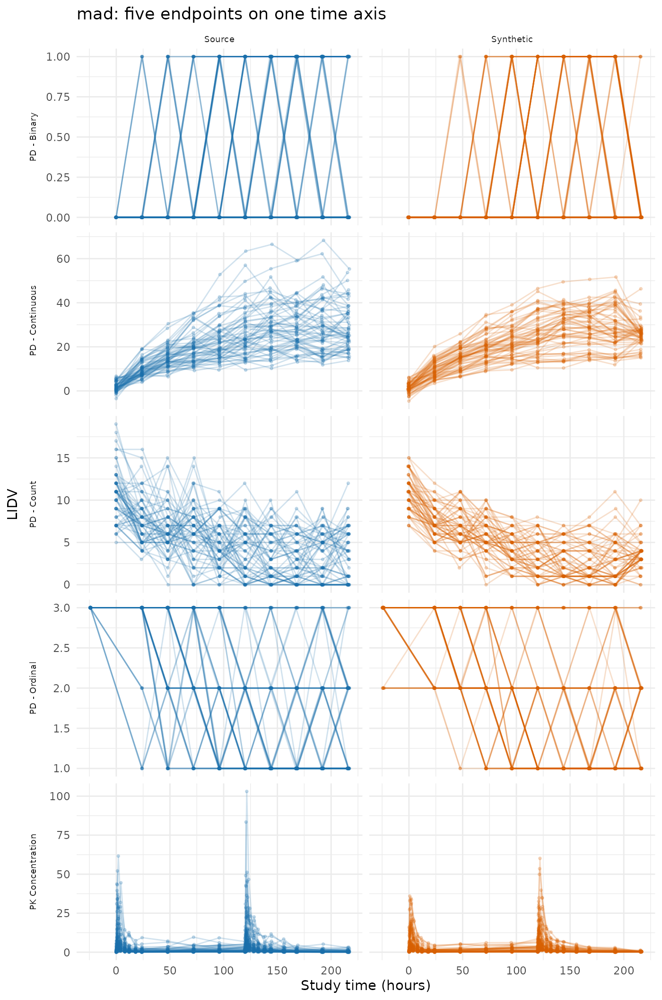
compare_pmx_distributions(mad, mad_synth, mad_roles)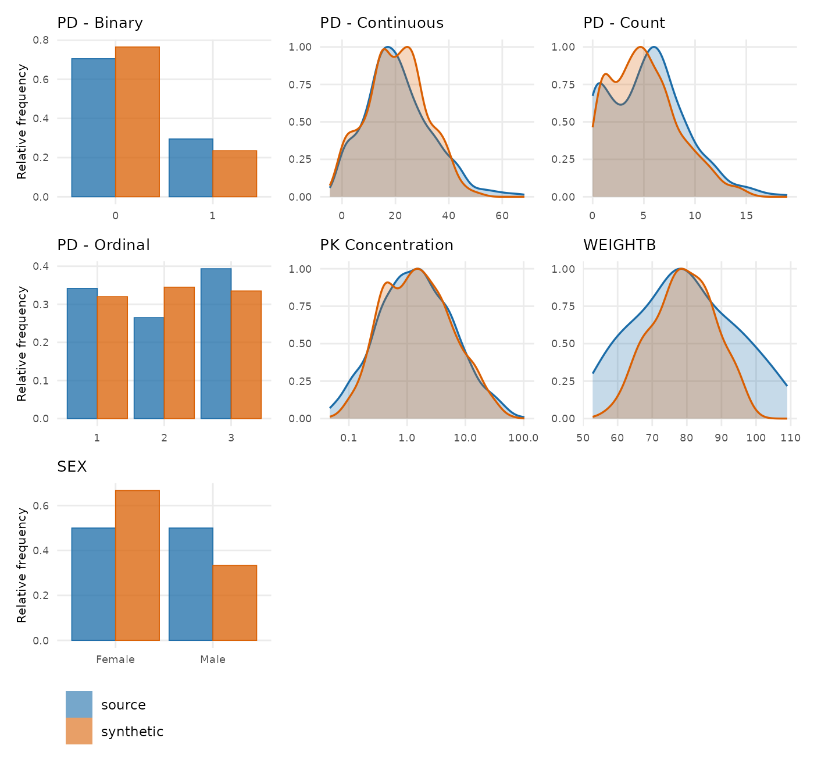
scorecard <- synpmx_scorecard(mad, mad_synth, mad_roles)
synpmx_scorecard_datatable(scorecard)D1 reports numbers, not shapes. Plot source and synthetic on the same axes -- DV against time, and each covariate -- with whatever you normally use.
Nothing fails. A3 reads 5 of 5, and it is a set comparison rather
than a row count: row counts stayed plausible in the defect that
motivated the check while an entire compartment disappeared. This is the
second declared NOMTIME and it produces the same clean
structural result as case1_pkpd.
The SEX panel carries the same categorical drift as
warfarin: an even split in the source, two thirds to one
third in the synthetic cohort — 30 and 30 becoming 40 and 20. It is
declared as a covariate rather than as strata, so the
anchor draw sets it.
This is also the dataset that shows why the figure switches geometry.
A panel holding eight or fewer distinct values is drawn as proportion
bars rather than as a curve, so PD - Binary and
PD - Ordinal come out as bars: a smoothed density over
{0, 1} would be a shape this study does not have.
PD - Count has more levels than that and stays a curve.
Discrete endpoints keep their scale
Three of mad‘s five endpoints are discrete, and
LIDV is one numeric column carrying all five, so restoring
the column’s class restores nothing about any of them. Blending
is a weighted mean, and a weighted mean of five donors’ zeros and ones
is a number between them; the subject and residual noise terms then
carry it off the level set entirely. Left alone, this study’s 0/1
endpoint comes back as 600 distinct values spanning -0.13 to 1.08.
synpmx_avatar() therefore decides what kind of values
each endpoint takes, from the source, and puts the generated values back
on that scale. The decision is worth reading before the data:
pmx_endpoint_types(mad, mad_roles)| endpoint | type | levels | decided_by | reason |
|---|---|---|---|---|
| PD - Binary | binary | 0, 1 | inferred | every observed value is 0 or 1 |
| PD - Continuous | continuous | – | inferred | not every observed value is a whole number |
| PD - Count | integer | – | inferred | 20 whole-number levels, from 0 to 19 |
| PD - Ordinal | ordinal | 1, 2, 3 | inferred | 3 whole-number levels: 1, 2, 3 |
| PK Concentration | continuous | – | inferred | not every observed value is a whole number |
discrete <- c("PD - Binary", "PD - Count", "PD - Ordinal")
values_taken <- function(data, endpoint) {
values <- data$LIDV[data$NAME == endpoint & data$EVID == 0]
sprintf("%d distinct, %.2f to %.2f", length(unique(values)),
min(values), max(values))
}
knitr::kable(
data.frame(
endpoint = discrete,
source = vapply(discrete, values_taken, character(1), data = mad),
synthetic = vapply(discrete, values_taken, character(1), data = mad_synth),
row.names = NULL
),
caption = "Values taken by the three discrete endpoints."
)| endpoint | source | synthetic |
|---|---|---|
| PD - Binary | 2 distinct, 0.00 to 1.00 | 2 distinct, 0.00 to 1.00 |
| PD - Count | 20 distinct, 0.00 to 19.00 | 16 distinct, 0.00 to 15.00 |
| PD - Ordinal | 3 distinct, 1.00 to 3.00 | 3 distinct, 1.00 to 3.00 |
A6 in the scorecard above is the check on it, and it reads the
finished table rather than trusting the mechanism. It is on every card;
the seven studies before this one have no discrete endpoint, so theirs
read no discrete endpoint and pass.
Two limits. The type is inferred, so an endpoint whose values are
whole numbers for a reason other than being discrete is called discrete
anyway — warfarin’s pca is a percentage
recorded without decimals, and its generated values are rounded to
match. pmx_roles(endpoint_types = ) overrides the inference
in either direction. And snapping a binary endpoint onto its levels
means generated values are source values: a 0/1 endpoint has no third
value to emit, so what protects a patient here is everything in the
masking report, never the distinctness of the number.
theo_md: seven oral doses, dosed by weight
Twelve subjects on one oral regimen, seven doses 24 hours apart, with dense concentration sampling around the first and last dose only.
data("theo_md", package = "nlmixr2data")
theo_roles <- pmx_roles(
id = "ID", time = "TIME", dv = "DV", amt = "AMT",
evid = "EVID", cmt = "CMT", covariates = "WT"
)
theo_synth <- suppressWarnings(synpmx_avatar(theo_md, theo_roles, seed = 303))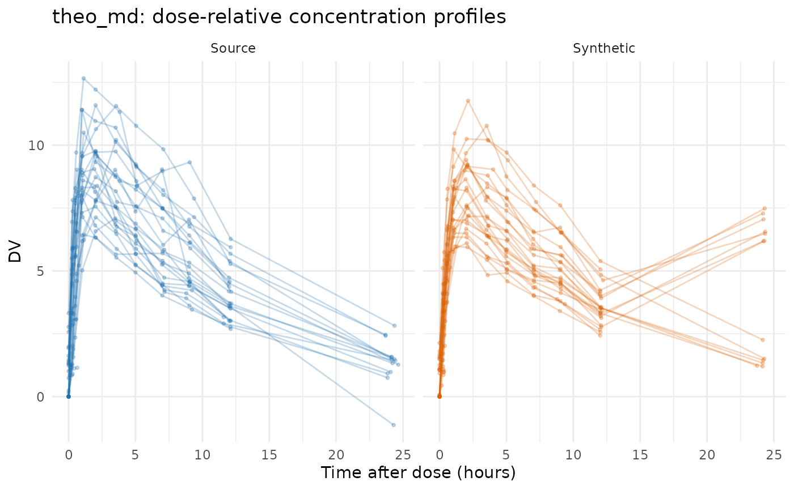
compare_pmx_distributions(theo_md, theo_synth, theo_roles)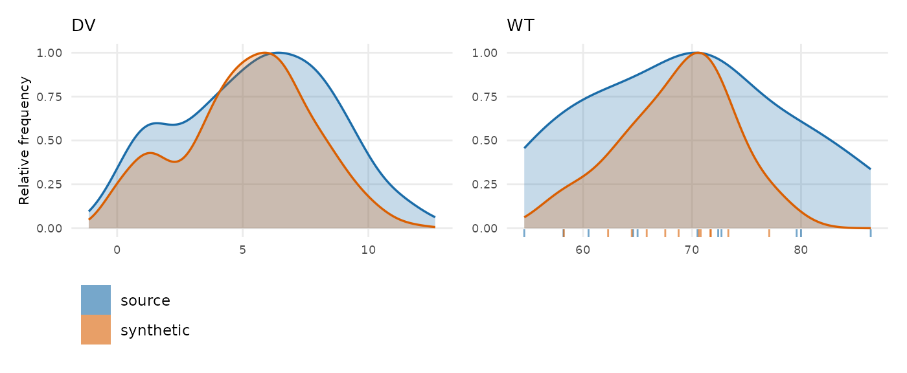
scorecard <- synpmx_scorecard(theo_md, theo_synth, theo_roles)
synpmx_scorecard_datatable(scorecard)D1 reports numbers, not shapes. Plot source and synthetic on the same axes -- DV against time, and each covariate -- with whatever you normally use.
Nothing fails. Twelve subjects on one dense protocol leave an obvious
visit grid to find, so coarsening takes the twelve unique observation
schedules to zero without a declared nominal_time, and the
three visit sets that remain are each held by several subjects.
warfarin: two endpoints on different time courses
32 subjects, a single dose, a pharmacokinetic endpoint
(cp) and a pharmacodynamic one (pca) that run
on different time courses, and a lower-case schema with one categorical
covariate.
data("warfarin", package = "nlmixr2data")
warfarin_roles <- pmx_roles(
id = "id", time = "time", dv = "dv", amt = "amt", evid = "evid",
dvid = "dvid", covariates = c("wt", "age", "sex"),
dose_covariate = "wt" # 1.5 mg/kg; say so rather than let it be inferred
)
warfarin_synth <- suppressWarnings(
synpmx_avatar(warfarin, warfarin_roles, seed = 404)
)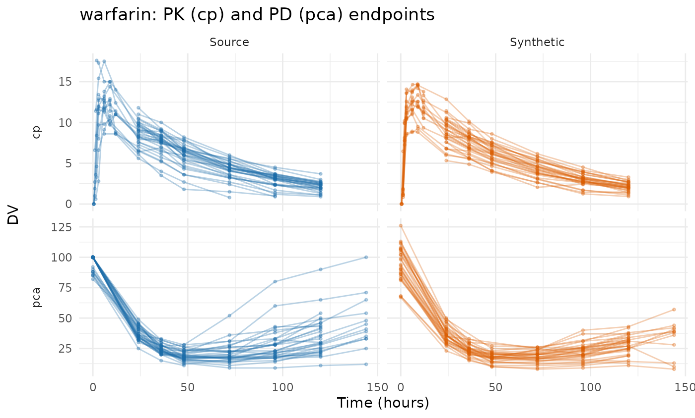
compare_pmx_distributions(warfarin, warfarin_synth, warfarin_roles)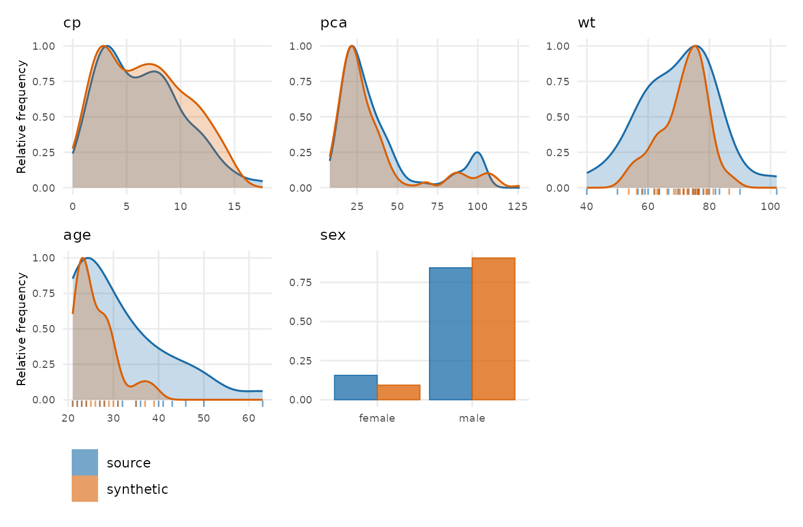
scorecard <- synpmx_scorecard(warfarin, warfarin_synth, warfarin_roles)
synpmx_scorecard_datatable(scorecard)D1 reports numbers, not shapes. Plot source and synthetic on the same axes -- DV against time, and each covariate -- with whatever you normally use.
Nothing fails. Warfarin is dosed at 1.5 mg/kg to within 0.1%, so
wt is declared as the dose_covariate and each
avatar’s amt is rebuilt from its own blended weight rather
than copied from its anchor’s. The ratio here is tight enough that
inference would have found it unaided, but declaring it is the habit
worth having: inference fails closed, and a copied amount under
weight-based dosing discloses one real patient’s weight exactly.
wbcSim: infusions, and patients too extreme to build on
45 subjects with infusion start/stop pairs and a delayed white-blood-cell decline, nadir and recovery. Follow-up time varies, and a few subjects are followed far longer than the rest.
data("wbcSim", package = "nlmixr2data")
wbc_roles <- pmx_roles(
id = "ID", time = "TIME", dv = "DV", amt = "AMT", evid = "EVID", cmt = "CMT"
)
wbc_synth <- suppressWarnings(synpmx_avatar(wbcSim, wbc_roles, seed = 505))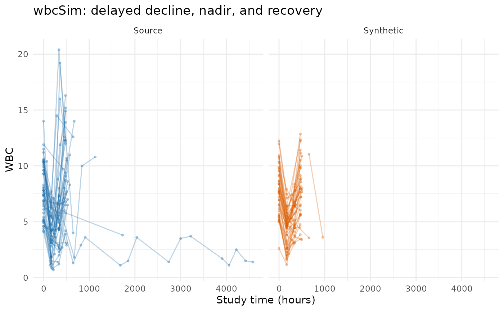
compare_pmx_distributions(wbcSim, wbc_synth, wbc_roles)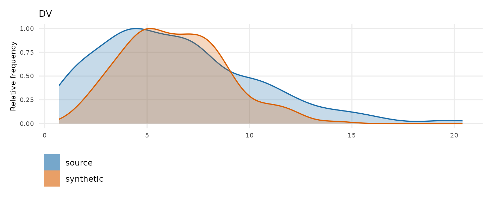
scorecard <- synpmx_scorecard(wbcSim, wbc_synth, wbc_roles)
synpmx_scorecard_datatable(scorecard)D1 reports numbers, not shapes. Plot source and synthetic on the same axes -- DV against time, and each covariate -- with whatever you normally use.
Nothing fails, and C2 is the row to read: 1 of the 4 source dose regimens is represented in the output.
Three re-dosed patients are not in the synthetic cohort
masking_table(wbcSim, wbc_roles, wbc_synth, "wbcSim",
section = "dose_schedules")| Quantity | Value | What it means |
|---|---|---|
| Dose schedules: WHEN each patient was dosed | ||
| Avatars whose dosing was re-truncated | 1 of 45 (2%) | the anchor stopped dosing at a depth nobody else used, so the avatar stops at a different one – shared, or used by nobody. Truncating a schedule to a real dose time is protocol-valid in a way that moving dose times is not |
| Distinct dose schedules in the source | 4 | |
| represented in the synthetic cohort | 2 (50%) | a regimen only one patient received cannot be given to an avatar without pointing at them, so it is not represented at all. This is the cost of the guarantee below, and on a small cohort it is unavoidable rather than a setting to tune |
| Avatars carrying a dose schedule nobody else shares | 0 (0%) |
must also be 0%. Dose events are
copied from the anchor verbatim, so patients whose dose times nobody
shares are not built upon. Non-zero when a whole ARM is in that position
– individualised dosing, per-patient titration – because an avatar is
only ever anchored inside the arm it was allocated to.
unmaskable_strata() says which arm |
Forty-two of the 45 subjects have a single infusion at time 0. The
other three were re-dosed on a schedule nobody else shares, so no avatar
can be built on them without pointing at them, and every synthetic
subject carries the one shared regimen. Doses per patient falls from 1.2
to 1.0 in the A5b row. The three patients are not removed and still act
as donors, but that part of the study design is not in the output, and
C2 is review rather than pass for exactly this
reason.
Two of those three are also the only patients in this vignette that
the anchor screen removes: they are followed far enough past the rest to
exceed twice the cohort’s 90th percentile, so
synpmx_avatar() builds no avatar on them
(screen = TRUE, the default).
section = "anchors" prints that as a pair: 43
anchors available, 45 avatars built. Screening removes a
subject from the pool avatars are drawn from, not from the cohort. The
remaining 43 are sampled with replacement to fill the same 45 slots, and
the screened subjects still contribute measurements as donors. What is
lost is the possibility of an avatar with their distinctive follow-up
length. screen = FALSE keeps every subject in the pool.
Dose amounts are not recomputed: wbcSim declares no
covariates, so there is nothing to test the amounts against.
nimoData: ten infusions recorded at actual times
Twelve subjects, ten roughly weekly infusions each, with declared
occasion (OCC) and time after dose (TAD). The
nominal dose group DOS is carried through with
keep, which copies it from the same subject that supplied
the doses so that it stays coherent with them. The redundant
WGT column is left undeclared and is dropped.
data("nimoData", package = "nlmixr2data")
nimo_roles <- pmx_roles(
id = "ID", time = "TIME", dv = "DV", amt = "AMT", evid = "EVID",
rate = "RATE", mdv = "MDV", tad = "TAD", occasion = "OCC",
covariates = c("BSA", "AGE", "HGT"), keep = "DOS"
)
nimo_synth <- suppressWarnings(synpmx_avatar(nimoData, nimo_roles, seed = 606))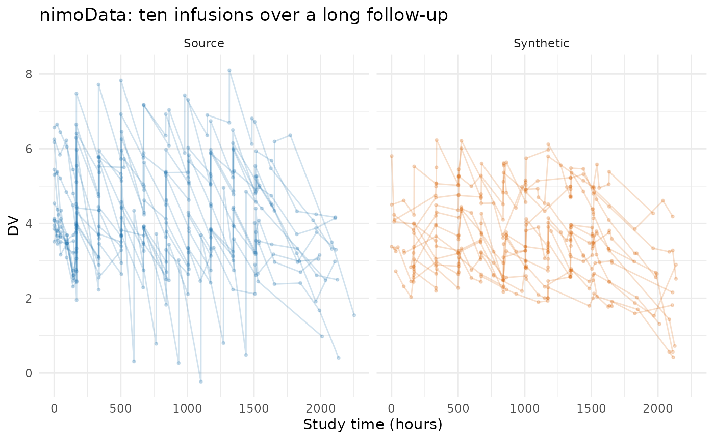
compare_pmx_distributions(nimoData, nimo_synth, nimo_roles)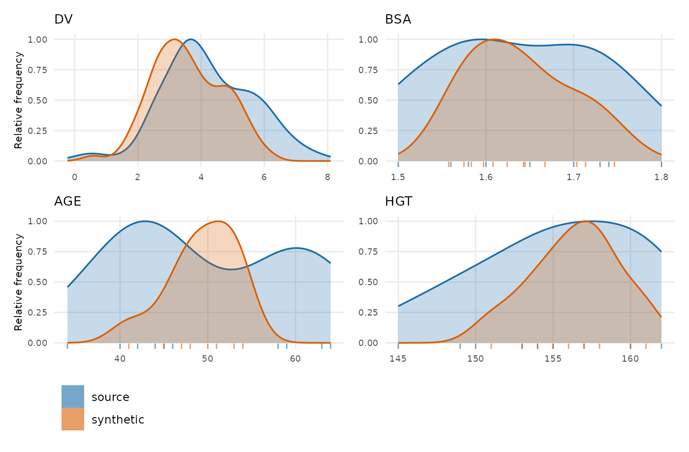
scorecard <- synpmx_scorecard(nimoData, nimo_synth, nimo_roles)
synpmx_scorecard_datatable(scorecard)D1 reports numbers, not shapes. Plot source and synthetic on the same axes -- DV against time, and each covariate -- with whatever you normally use.
Every check passes, and the dataset is still not
shippable. A5b is the row to read: doses per patient falls from
10 to 1.6. Ten weekly infusions go in and between one and two come out,
because the only openings any two subjects share are the first dose and
occasionally the second. C2 agrees from the other side — 7 of the 12
source regimens are represented, none of them at full length. This is
the case where a card of passes is worth less than one
review row.
The inferred grid achieves nothing here
masking_table(nimoData, nimo_roles, nimo_synth, "nimoData",
section = "visits")| Quantity | Value | What it means |
|---|---|---|
| Visit schedule: WHEN patients were observed | ||
| Visit grid used | derived | no usable nominal_time, so a grid was
inferred from the recorded times themselves. Declaring
nominal_time is better |
| Unique observation schedules, before coarsening | 12 (100%) | patients whose list of observation times nobody else shares |
| Unique observation schedules, after coarsening | 12 (100%) | the count that matters: an avatar copies its anchor’s times verbatim |
| because of a one-off observation time | 12 (100%) | sampled when nobody else was. Declaring
nominal_time is the fix |
| because of which visits they attended | 0 (0%) | every time is shared. The visits themselves are missing – a missed visit, a discontinuation, or follow-up that has not reached them – and no grid can fix that |
12 of 12 subjects are unique before coarsening, 12 of 12 after, and every one of them on a one-off observation time. Ten roughly weekly infusions over a long follow-up means no two subjects were ever dosed or sampled close enough together for an inferred grid to merge them, so every subject is observed at moments that are theirs alone.
section = "visit_sets" shows the same thing from the
other side. Twelve subjects hold twelve distinct visit sets, two of them
held by a single patient and discarded, and every avatar’s
arrangement was built from a shape rather than reused, 100%.
The shape is how many visits were missed and whether the misses were
terminal, contiguous, or scattered; which specific visits each patient
missed does not survive.
The dosing is cut back rather than copied, because dose events are copied from the anchor verbatim and moving a dose is not a protocol-valid edit the way moving a sample is. Truncating one is. When ten infusions are recorded at actual times — 165.70, 167.24 and 168.05 for what the protocol called one weekly visit — no two subjects share an opening past the first dose or two, so that is where every avatar’s course stops. Nothing is disclosed and almost nothing is left.
What that does to the record
One row per subject, a grey tick for each dose and a coloured dot for each observation. This is the figure to read before the scorecard:
plot_pmx_schedule(nimoData, nimo_roles, main = "nimoData, source")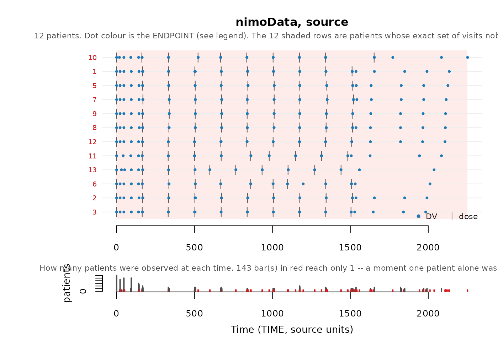
plot_pmx_schedule(nimo_synth, nimo_roles, main = "nimoData, synthetic")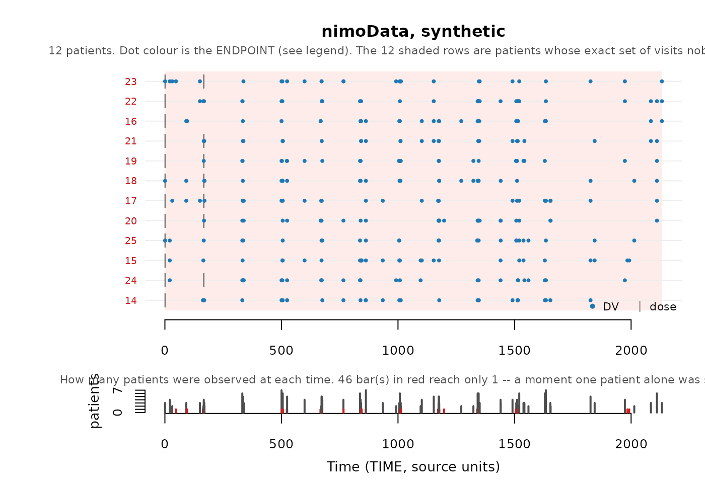
The source has a dose tick standing in front of every cluster of samples, right across the follow-up. The synthetic cohort has one or two ticks at the far left and then nothing, while the samples carry on to 2100 h regardless — the same follow-up with the exposure taken out from under it.
The overlay at the top of this section shows what that does to the
concentrations. The source’s sawtooth — a peak after each infusion, a
decline, then the next one — is absent from the synthetic panel, because
there are no repeated infusions left to produce it. Both panels span the
same follow-up: maximum TIME is 2135 h against the source’s
2252 h. What has changed is everything underneath, and time after dose
is where it shows up as a number:
after_last_dose <- function(data) {
observed <- data[data$EVID == 0, ]
last <- tapply(data$TIME[data$EVID != 0], data$ID[data$EVID != 0], max)
c(median_tad = round(median(observed$TAD, na.rm = TRUE), 1),
past_last_dose = sum(observed$TIME > last[as.character(observed$ID)]),
observations = nrow(observed))
}
rbind(source = after_last_dose(nimoData), synthetic = after_last_dose(nimo_synth))
#> median_tad past_last_dose observations
#> source 96.3 59 321
#> synthetic 935.4 317 331Median time after dose goes from about four days to about thirty-nine, and almost every sample ends up with no dose behind it at all. A truncation is the right edit for a patient who stopped early, and follow-up continuing past the last dose is then real; here the stopping point is an artefact of masking, and nothing in the mechanism asks whether the observation record still has exposure supporting it.
Constructing a nominal time
All three findings have one cause: there is no protocol grid in this dataset, only the times things happened to occur at. The design is ten weekly infusions with a declared occasion and time after dose, so the grid can be written down — the occasion number times the nominal interval, plus the visit’s nominal time after dose.
Writing it down is a statement about the protocol, and it takes one
decision the arithmetic will not make for you. Rounding time after dose
to the nearest day sends a trough drawn just before the next infusion —
TAD near 168 h, and 98 of the 321 observations here are one
— onto that infusion’s own nominal time, where it stops being a trough
and becomes a time-zero sample. Give the pre-dose sample a slot of its
own instead:
nimo_interval <- 168 # the protocol's weekly infusion
nimo_nominal <- nimoData
last_occasion <- ave(nimo_nominal$OCC, nimo_nominal$ID, FUN = max)
nominal_tad <- round(nimo_nominal$TAD / 24) * 24
# A sample at the end of its interval is the NEXT infusion's pre-dose trough,
# not that infusion's time-zero sample. Only where another infusion follows:
# after the last one, a long time after dose is real follow-up.
pre_dose <- nimo_nominal$EVID == 0 & nominal_tad >= nimo_interval &
nimo_nominal$OCC < last_occasion
nominal_tad[pre_dose] <- nimo_interval - 1
nimo_nominal$NTIME <- (nimo_nominal$OCC - 1) * nimo_interval +
ifelse(nimo_nominal$EVID == 0, nominal_tad, 0)TIME and NTIME side by side, for the first
two occasions of one subject. The recorded times wander; the nominal
ones do not, and that is the whole of what the declaration buys:
shown <- nimo_nominal[nimo_nominal$ID == nimo_nominal$ID[1] &
nimo_nominal$OCC <= 2,
c("ID", "OCC", "EVID", "TIME", "TAD", "NTIME")]
knitr::kable(shown, row.names = FALSE, digits = 2)| ID | OCC | EVID | TIME | TAD | NTIME |
|---|---|---|---|---|---|
| 1 | 1 | 1 | 0.00 | 0.00 | 0 |
| 1 | 1 | 0 | 1.28 | 1.28 | 0 |
| 1 | 1 | 0 | 23.16 | 23.16 | 24 |
| 1 | 1 | 0 | 46.91 | 46.91 | 48 |
| 1 | 1 | 0 | 95.21 | 95.21 | 96 |
| 1 | 1 | 0 | 144.13 | 144.13 | 144 |
| 1 | 1 | 0 | 167.16 | 167.16 | 167 |
| 1 | 2 | 1 | 167.20 | 0.00 | 168 |
| 1 | 2 | 0 | 169.02 | 1.82 | 168 |
| 1 | 2 | 0 | 333.90 | 166.70 | 335 |
The two infusions were given at 0 and 167.20 h and land on a nominal 0 and 168. The row to look at is the sample at 167.16 h, four minutes before that second infusion and still carrying occasion 1: it is the trough. It keeps a nominal time of 167, an hour ahead of the infusion it precedes, instead of collapsing onto it and being recorded as that infusion’s time-zero sample.
nimo_roles_nominal <- pmx_roles(
id = "ID", time = "TIME", dv = "DV", amt = "AMT", evid = "EVID",
rate = "RATE", mdv = "MDV", tad = "TAD", occasion = "OCC",
nominal_time = "NTIME",
covariates = c("BSA", "AGE", "HGT"), keep = "DOS"
)
nimo_fixed <- suppressWarnings(
synpmx_avatar(nimo_nominal, nimo_roles_nominal, seed = 606)
)
scorecard <- synpmx_scorecard(nimo_nominal, nimo_fixed, nimo_roles_nominal)
synpmx_scorecard_datatable(scorecard)D1 reports numbers, not shapes. Plot source and synthetic on the same axes -- DV against time, and each covariate -- with whatever you normally use.
The dosing comes back in full. A5b goes from
10 -> 1.6 to 10 -> 10 and C2 from 7 of
12 to 1 of 1, because on the nominal grid the twelve dose schedules
become one schedule that all twelve subjects share — so there is nothing
left to truncate, and no avatar’s course has to stop early. Unique
observation schedules fall from 12 to 5, the twelve visit sets collapse
to eight, real sets become reusable, and the invented-arrangement share
falls from 100% to 25%. B2 falls from 3 flagged patients to 2. Two visit
sets are discarded either way, which is why the discard count should
never be read on its own.
Both cards pass, and only one of them is usable.
That is the argument for reading A5b rather than stopping at the B rows:
the privacy guarantee is identical on both sides and the science is not.
The samples get their exposure back with the doses: 61 of 326
observations sit after the last dose, against 59 of 321 in the source,
where before it was 317 of 331. Median time after dose comes back to 72
h against the source’s 96 h, where the recorded-time run gave 935 h —
and it is the pre-dose slot above that buys most of that. Rounding the
trough onto its next infusion instead leaves the median at 0 and doubles
the share of time-zero samples, which is the A1 gap in
vignette("scorecard-synthetic-data-checks") reached by a
construction rather than by the generator.
What the package does not yet do is notice the first case: no check asks whether an avatar’s observations still have dosing supporting them, so that card passes eighteen of eighteen while describing a study nobody ran.
Which path to try
There is no single answer, and the order below is what the datasets in this vignette suggest rather than a rule.
-
Declare a
nominal_timethat already exists.case1_pkpdandmadship withNOMTIME, and both reach zero exposure with nothing else done. If your study has the column, this is the whole job. - Construct one, as above. Available whenever the protocol can be written down from what the dataset records — here an occasion number and a time after dose. It is a statement about the design, so it belongs in the dataset where a reader can check it, not inside the generator where they cannot. The trough decision above is why: the arithmetic has a choice in it that only somebody who knows the study can make.
-
Fall back to the inferred grid. With no
nominal_time,coarsen_time(on by default) derives one from the recorded times. This is whatpheno_sdruns on, and it does real work there — but it is a guess at a grid, and onnimoDatait merges nothing at all, which is the whole of this section. -
Accept the truncation, and read A5b. Where dosing
is genuinely individualised there is no protocol grid to recover,
because there was no protocol.
pheno_sdis that case: routine neonatal care, no occasions, and nothing to construct. The dosing is then shortened to what several patients share, and how much survives is a number to judge rather than a bug to fix.
mavoglurant: an occasion-reset clock
120 subjects in one- and two-period profiles, with TIME
resetting within OCC, an occasion-varying assigned
DOSE carried through with keep, numeric-coded
SEX, and infusion rows. The reset clock validates within ID
and occasion.
data("mavoglurant", package = "nlmixr2data")
mavo_roles <- pmx_roles(
id = "ID", time = "TIME", dv = "DV", amt = "AMT", evid = "EVID",
cmt = "CMT", rate = "RATE", mdv = "MDV", occasion = "OCC",
keep = "DOSE", covariates = c("AGE", "SEX", "WT", "HT")
)
mavo_synth <- suppressWarnings(
synpmx_avatar(mavoglurant, mavo_roles, seed = 707)
)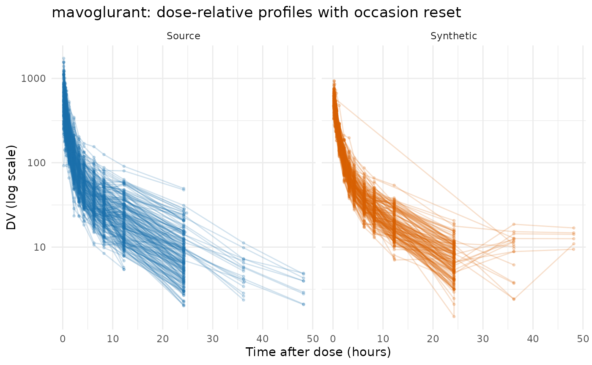
compare_pmx_distributions(mavoglurant, mavo_synth, mavo_roles)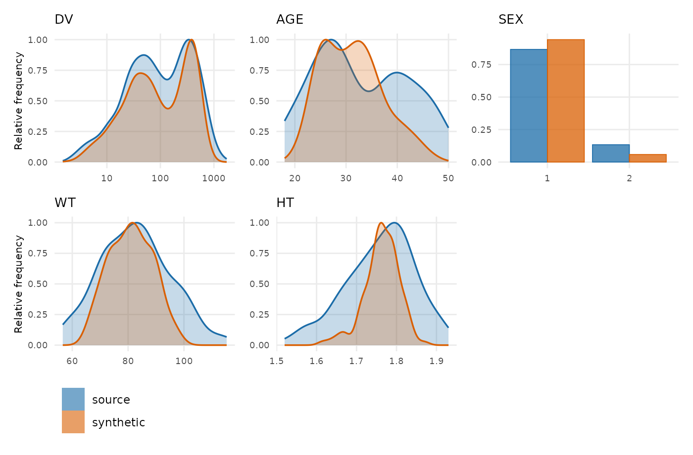
scorecard <- synpmx_scorecard(mavoglurant, mavo_synth, mavo_roles)
synpmx_scorecard_datatable(scorecard)D1 reports numbers, not shapes. Plot source and synthetic on the same axes -- DV against time, and each covariate -- with whatever you normally use.
Nothing fails, and B2 is the row that looks alarming: 40 of the 120
synthetic patients are flagged as unusual.
flag_identifiable_subjects() scores each subject against
its own stratum, and no strata are declared here, so the
whole cohort is scored as one group. Recorded follow-up length is
bimodal in this study, because TIME restarts within
OCC and a subject therefore reads as either about 24 hours
or about 36 to 48. Against a single pooled tolerance, subjects at both
ends are flagged. The row is reporting the shape of the study rather
than a property of the synthetic data, which is why it is
review.
The largest residual in the vignette
masking_table(mavoglurant, mavo_roles, mavo_synth, "mavoglurant",
section = "visits")| Quantity | Value | What it means |
|---|---|---|
| Visit schedule: WHEN patients were observed | ||
| Visit grid used | derived | no usable nominal_time, so a grid was
inferred from the recorded times themselves. Declaring
nominal_time is better |
| Unique observation schedules, before coarsening | 72 (60%) | patients whose list of observation times nobody else shares |
| Unique observation schedules, after coarsening | 64 (53%) | the count that matters: an avatar copies its anchor’s times verbatim |
| because of a one-off observation time | 11 (9%) | sampled when nobody else was. Declaring
nominal_time is the fix |
| because of which visits they attended | 53 (44%) | every time is shared. The visits themselves are missing – a missed visit, a discontinuation, or follow-up that has not reached them – and no grid can fix that |
Of the 64 patients still unique after coarsening, eleven have a
one-off observation time and the other 53 share every observation time
with somebody, differing only in which of those visits they attended.
Those 53 are the largest absolute residual here, and no grid setting
moves them. This is what the two sub-rows are for: they separate a
problem that declaring nominal_time fixes from one that can
only be dropped, remediated, or accepted.
section = "visit_sets" is the other half of the picture.
Mavoglurant has by far the most distinct visit sets of any dataset here,
73, and only two of them are held by a single patient, so only those two
are discarded and no arrangement had to be invented at all. For every
one of the 120 avatars a set that several real patients share was
available to reuse. A large number of distinct visit sets is not by
itself a problem; a large number of singleton sets is.
pheno_sd: individualised dosing in routine care
59 neonates given phenobarbital for seizure prevention, from routine clinical care rather than from a protocol. Dosing is individualised to the infant, sampling is sparse and irregular, and weight varies over time. It is the least protocol-like dataset here.
data("pheno_sd", package = "nlmixr2data")
pheno_roles <- pmx_roles(
id = "ID", time = "TIME", dv = "DV", amt = "AMT", evid = "EVID",
covariates = c("WT", "APGR")
)
pheno_synth <- suppressWarnings(
synpmx_avatar(pheno_sd, pheno_roles, seed = 1010)
)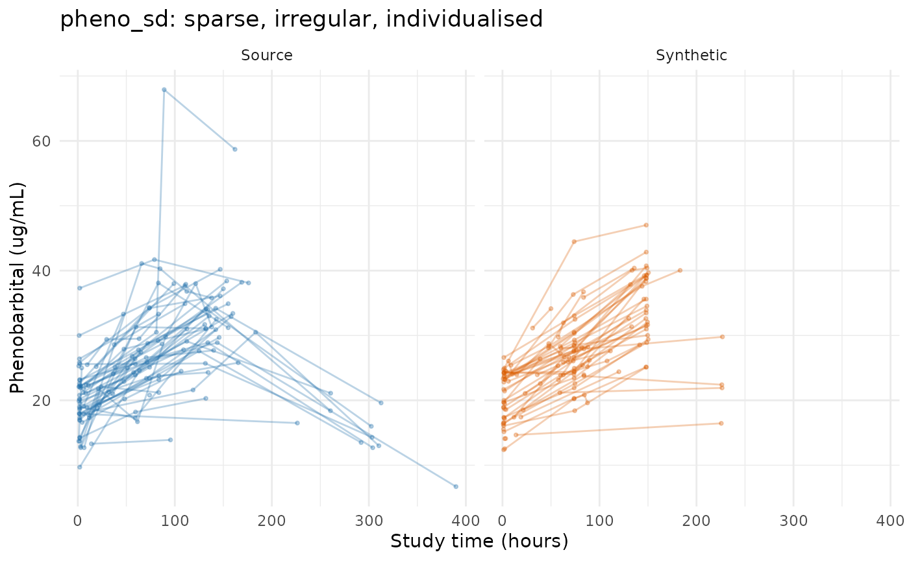
compare_pmx_distributions(pheno_sd, pheno_synth, pheno_roles)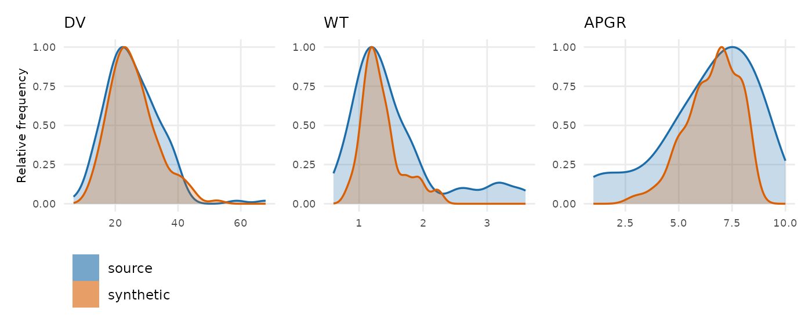
scorecard <- synpmx_scorecard(pheno_sd, pheno_synth, pheno_roles)
synpmx_scorecard_datatable(scorecard)D1 reports numbers, not shapes. Plot source and synthetic on the same axes -- DV against time, and each covariate -- with whatever you normally use.
Nothing fails, and the two rows that moved say what reaching that cost. Doses per patient falls from 10 to 5.6 in A5b, and 35 of the 56 source dose regimens are represented in C2. B1b passing here is not each infant’s full course being masked; it is each course being cut short.
Dosing that can only be masked by shortening it
masking_table(pheno_sd, pheno_roles, pheno_synth, "pheno_sd",
section = "dose_schedules")| Quantity | Value | What it means |
|---|---|---|
| Dose schedules: WHEN each patient was dosed | ||
| Avatars whose dosing was re-truncated | 54 of 59 (92%) | the anchor stopped dosing at a depth nobody else used, so the avatar stops at a different one – shared, or used by nobody. Truncating a schedule to a real dose time is protocol-valid in a way that moving dose times is not |
| Distinct dose schedules in the source | 56 | |
| represented in the synthetic cohort | 35 (62%) | a regimen only one patient received cannot be given to an avatar without pointing at them, so it is not represented at all. This is the cost of the guarantee below, and on a small cohort it is unavoidable rather than a setting to tune |
| Avatars carrying a dose schedule nobody else shares | 0 (0%) |
must also be 0%. Dose events are
copied from the anchor verbatim, so patients whose dose times nobody
shares are not built upon. Non-zero when a whole ARM is in that position
– individualised dosing, per-patient titration – because an avatar is
only ever anchored inside the arm it was allocated to.
unmaskable_strata() says which arm |
One row per infant, a grey tick for each dose and a coloured dot for each observation. The dose ticks are the story: a forest of them across the whole follow-up in the source, and in the output the same forest for the first few days, thinning out and stopping well before the source does.
plot_pmx_schedule(pheno_sd, pheno_roles, main = "pheno_sd, source")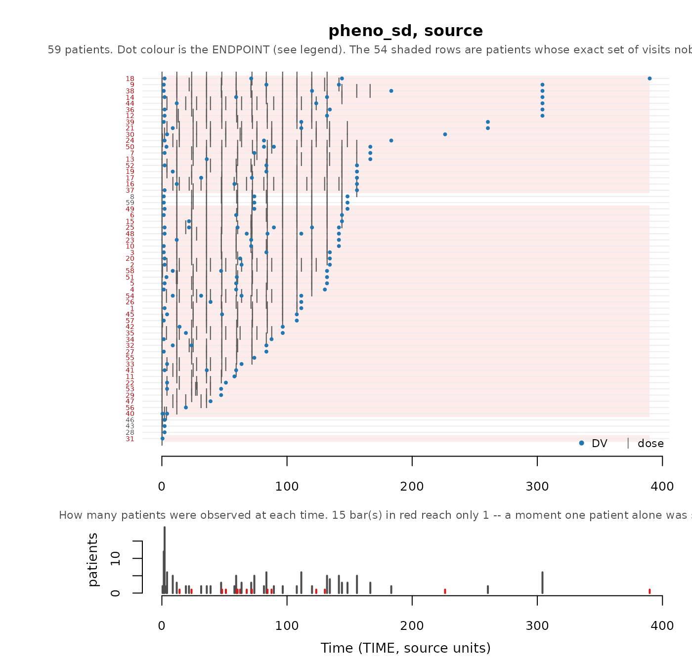
plot_pmx_schedule(pheno_synth, pheno_roles, main = "pheno_sd, synthetic")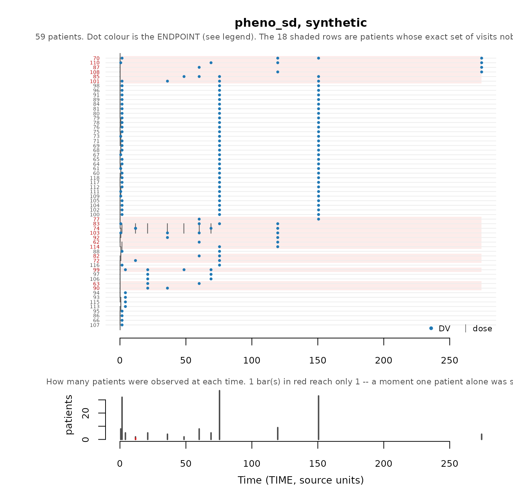
The tail of each course is what this study loses. On the observation side the mechanism works: B1a holds at 0, so no avatar has a set of attended visits that belongs to one real infant. On the dose side there is almost no complete schedule safe to copy — the source holds 56 distinct dose schedules across 59 infants — but that is not the only lever. Most infants open the same way, twelve-hourly from time zero, and an opening several infants share can be given to an avatar as long as no single infant stopped exactly there. So each avatar’s dosing is truncated back to the deepest such opening, which on this study is about half the course: ten doses a patient becomes 5.6, over 35 of the 56 regimens.
What is lost is specifically the divergent tail — the part of a course where an individual clinician’s decisions have separated one infant from every other, and therefore exactly the part that identifies them. Dose events are copied from the anchor verbatim, so there is no way to keep it. Coarsening does not help either: it acts on the visit grid, while the exposure here is which days this infant was dosed.
A study with this shape accepts a synthetic cohort whose dosing is a
shortened version of the real one, and has to decide whether that is
enough for the purpose. pheno_sd declares no arms; where a
study does, the same shape confined to one arm is reported by arm —
unmaskable_strata() before generating, and rows B1a and B1b
afterwards, which name the arm that could not be masked. An avatar is
never anchored outside the arm it was allocated to, so an arm whose
dosing is individualised fails rather than borrowing patients from an
arm whose dosing is not.
How well did the obfuscation work?
Everything above shows that the synthetic data looks right. This section asks the other question: how much of each real patient is still visible in it?
Exposure across the eight datasets
Each dataset above carries its own accounting. This section puts the same quantities in one place, because the contrast between datasets is what shows how much the answer depends on study design rather than on the package.
exposure_row <- function(label, source, roles, synthetic) {
before <- skeleton_uniqueness(source, roles)
after <- attr(synthetic, "pmx_settings")
data.frame(
Dataset = label,
Subjects = nrow(before),
`Unique before` = attr(before, "n_unique_schedule"),
`Unique after` = after$unique_schedule_n,
`Unique observation time` = after$unique_obs_time_n,
`Unique visit set` = after$unique_visit_set_n,
check.names = FALSE, stringsAsFactors = FALSE
)
}
exposure <- rbind(
exposure_row("case1_pkpd", case1_pkpd, case1_roles, case1_synth),
exposure_row("mad", mad, mad_roles, mad_synth),
exposure_row("theo_md", theo_md, theo_roles, theo_synth),
exposure_row("warfarin", warfarin, warfarin_roles, warfarin_synth),
exposure_row("wbcSim", wbcSim, wbc_roles, wbc_synth),
exposure_row("nimoData", nimoData, nimo_roles, nimo_synth),
exposure_row("mavoglurant", mavoglurant, mavo_roles, mavo_synth),
exposure_row("pheno_sd", pheno_sd, pheno_roles, pheno_synth)
)
knitr::kable(
exposure,
caption = paste(
"Source subjects holding a visit schedule no other subject shares,",
"before and after time coarsening. The last two columns split the",
"'after' count by cause."
)
)| Dataset | Subjects | Unique before | Unique after | Unique observation time | Unique visit set |
|---|---|---|---|---|---|
| case1_pkpd | 180 | 180 | 0 | 0 | 0 |
| mad | 60 | 60 | 0 | 0 | 0 |
| theo_md | 12 | 12 | 0 | 0 | 0 |
| warfarin | 32 | 14 | 12 | 0 | 12 |
| wbcSim | 45 | 30 | 17 | 2 | 15 |
| nimoData | 12 | 12 | 12 | 12 | 0 |
| mavoglurant | 120 | 72 | 64 | 11 | 53 |
| pheno_sd | 59 | 56 | 54 | 14 | 40 |
Three datasets reach zero and five do not, and the split is not about
cohort size. case1_pkpd (180 patients) and mad
(60) reach it because they declare NOMTIME, so coarsening
reads the protocol grid instead of inferring one; theo_md
reaches it on an inferred grid because twelve subjects on one dense
protocol leave an obvious grid to find. Everything else is a study whose
recorded times do not collapse, and nimoData and
pheno_sd are the extreme cases — real studies where the
times are genuinely per-patient.
What the masking cost
Exposure is only half the story. The mechanisms that reduce it do so by removing things, and the removals are worth seeing next to the numbers above.
cost_row <- function(label, source, roles, synthetic) {
settings <- attr(synthetic, "pmx_settings")
data.frame(
Dataset = label,
Patients = settings$source_subjects,
`Screened out` = settings$anchors_screened_out,
`Below donor floor` = settings$anchors_route_excluded,
`Anchors left` = settings$anchors_available,
`Patterns` = settings$patterns_total,
`Patterns lost` = settings$patterns_dropped,
`Patients affected` = settings$subjects_with_dropped_pattern,
`Dose basis` = ifelse(is.na(settings$dose_basis), "—", settings$dose_basis),
check.names = FALSE, stringsAsFactors = FALSE
)
}
knitr::kable(
rbind(
cost_row("case1_pkpd", case1_pkpd, case1_roles, case1_synth),
cost_row("mad", mad, mad_roles, mad_synth),
cost_row("theo_md", theo_md, theo_roles, theo_synth),
cost_row("warfarin", warfarin, warfarin_roles, warfarin_synth),
cost_row("wbcSim", wbcSim, wbc_roles, wbc_synth),
cost_row("nimoData", nimoData, nimo_roles, nimo_synth),
cost_row("mavoglurant", mavoglurant, mavo_roles, mavo_synth),
cost_row("pheno_sd", pheno_sd, pheno_roles, pheno_synth)
),
caption = paste(
"What the masking removed. The first three counts are patients excluded",
"from the anchor pool; `Patterns` counts distinct visit sets in",
"the source and `Patterns lost` those too rare to be reused."
)
)| Dataset | Patients | Screened out | Below donor floor | Anchors left | Patterns | Patterns lost | Patients affected | Dose basis |
|---|---|---|---|---|---|---|---|---|
| case1_pkpd | 180 | 0 | 0 | 180 | 6 | 0 | 0 | — |
| mad | 60 | 0 | 0 | 60 | 6 | 0 | 0 | — |
| theo_md | 12 | 0 | 0 | 12 | 3 | 0 | 0 | — |
| warfarin | 32 | 0 | 0 | 32 | 14 | 4 | 4 | wt |
| wbcSim | 45 | 2 | 0 | 43 | 25 | 5 | 5 | — |
| nimoData | 12 | 0 | 0 | 12 | 12 | 2 | 2 | — |
| mavoglurant | 120 | 0 | 0 | 120 | 73 | 2 | 2 | — |
| pheno_sd | 59 | 0 | 0 | 59 | 56 | 3 | 3 | — |
Three columns in this table need reading with care.
Only wbcSim loses any patient from the anchor
pool, and the cohort is still full size. Screening removes a
subject from the pool avatars are drawn from, not from the
cohort: the remaining anchors are sampled with replacement to fill every
slot, and the screened subjects still contribute measurements as donors.
An exclusion costs coverage of a structure, never sample size.
Patterns lost equals
Patients affected in every row. That is an
identity, not a coincidence. At the default floor of 2, a pattern is
discarded exactly when fewer than two patients share it — that
is, when exactly one does. So every discarded pattern has precisely one
holder and the two columns must agree. They only diverge at a floor of 3
or more, where a pattern held by two patients is also dropped.
Patterns lost says nothing about how well a
dataset did. mavoglurant loses 2 of 73 and
nimoData loses 2 of 12, and they are not comparable
results: mavoglurant reused a real visit set for every avatar, while
nimoData could reuse none and invented all twelve from a shape. The
discard count has to be read next to
pattern_generated_fraction, which
pmx_masking_report() prints as “misses placed fresh” and
this table does not.
Is a “pattern” too strictly defined?
Reasonably asked, and the answer is yes, deliberately. A pattern here is the exact set of endpoint-and-time pairs a subject was observed at. Two patients who each missed exactly one visit have different patterns if they missed different visits. Every pattern held by exactly one patient is discarded, and how many that is depends entirely on the study: 4 of warfarin’s 14 after coarsening, 5 of wbcSim’s 25, but only 2 of mavoglurant’s 73.
The strictness is what makes the guarantee exact: reusing a pattern that one real patient holds would reproduce that patient’s schedule, so nothing short of exact matching would support the claim. The cost is that the definition cannot see that “missed one visit, early” and “missed one visit, late” are the same kind of event.
That is why the draw is two-stage. A shape is chosen first — how many visits were missed, and whether the misses were terminal (at the end of the record), contiguous (an interruption), or scattered — and both of those patients share one. Within the shape a real pattern is reused if one clears the floor; only otherwise is an arrangement generated, and a generated one is rejected and redrawn if it happens to land on a pattern too rare to have been reusable.
What the fallback rescues is the avatar, not the pattern
count. A discarded pattern stays discarded; what the shape gives is a
legal set of visits to hand the avatar that would otherwise have worn
it. pmx_masking_report() shows the price in its “misses
placed fresh” row, and it varies as much as everything else here:
nimoData pays it in full at 100%, pheno_sd at
42%, warfarin at 22%, wbcSim at 2%, and
mavoglurant, theo_md, case1_pkpd
and mad not at all.
What remains lost is resolution: how much missingness there was and what kind survive; which specific visits each patient missed does not.
How close the values landed
Everything above concerns structure. Blending is the
mechanism that protects the values, and
compare_pmx_proximity() is its measurement: it asks whether
each subject’s nearest neighbour lies in its own dataset or the other
one. Near 0.5 means a synthetic subject is no more like a real subject
than one real subject is like another, which is the target; toward 0
means memorisation.
proximity_row <- function(label, source, synthetic, roles) {
report <- compare_pmx_proximity(source, synthetic, roles, replicates = 30)
data.frame(
Dataset = label,
`Adversarial accuracy` = round(report$adversarial_accuracy, 3),
`Null lower` = round(report$null_lower, 3),
`Null upper` = round(report$null_upper, 3),
`Per side` = report$n_compared,
check.names = FALSE, stringsAsFactors = FALSE
)
}
knitr::kable(
rbind(
proximity_row("case1_pkpd", case1_pkpd, case1_synth, case1_roles),
proximity_row("mad", mad, mad_synth, mad_roles),
proximity_row("theo_md", theo_md, theo_synth, theo_roles),
proximity_row("warfarin", warfarin, warfarin_synth, warfarin_roles),
proximity_row("wbcSim", wbcSim, wbc_synth, wbc_roles),
proximity_row("nimoData", nimoData, nimo_synth, nimo_roles),
proximity_row("mavoglurant", mavoglurant, mavo_synth, mavo_roles),
proximity_row("pheno_sd", pheno_sd, pheno_synth, pheno_roles)
),
caption = paste(
"Nearest-neighbour adversarial accuracy against a split-half null built",
"from the source cohort itself. 0.5 is the target."
)
)| Dataset | Adversarial accuracy | Null lower | Null upper | Per side |
|---|---|---|---|---|
| case1_pkpd | 0.600 | 0.426 | 0.559 | 90 |
| mad | 0.583 | 0.350 | 0.605 | 30 |
| theo_md | 0.500 | 0.167 | 0.773 | 6 |
| warfarin | 0.438 | 0.216 | 0.719 | 16 |
| wbcSim | 0.477 | 0.335 | 0.632 | 22 |
| nimoData | 0.250 | 0.167 | 0.773 | 6 |
| mavoglurant | 0.617 | 0.402 | 0.577 | 60 |
| pheno_sd | 0.466 | 0.353 | 0.596 | 29 |
Read the null intervals before the point estimates. They are wide — these are cohorts of a few dozen, and the statistic is built from nearest-neighbour comparisons that are noisy at that size. A value inside the interval means nothing was detected, not that nothing is there. What it would catch is a blatant leak: a synthetic subject sitting on top of a real one drives the statistic to zero, which the package’s own regression test confirms by handing the function a verbatim copy and requiring it to object.
Reading the tables across datasets
The unique-schedule count after coarsening is the number of patients you would consider dropping, and the split by cause decides whether dropping is even the right response. Each dataset section above works through its own numbers; the pattern across all eight is what matters here.
The spread runs from case1_pkpd, where 180
patients on a declared nominal grid go to 0 and the mechanism has
nothing left to do, through mavoglurant,
where the grid does most of what it can and still leaves 53 of 120
patients unique on their visit set, to
nimoData, where the grid achieves nothing at
all, and finally to pheno_sd, where the
observation side is clean and the dosing survives only as far
as the shared opening of each course. Same package, same
defaults, same seed discipline — the difference is entirely in how the
studies were designed and how their times were recorded.
That is the point of reporting these per dataset rather than quoting a headline number. There is no “synpmx removes X% of the exposure.” There is only what it removed from your study, which is why every run reports it and why the sequence below starts with a question about your data rather than about a setting.
What the other mechanisms leave behind
One residual belongs to a mechanism these tables do not have a column for.
Dose sequence. The dose amount is handled: under dosing proportional to a baseline covariate, each avatar’s amount is recomputed from its own blended covariate, as the masking reports above show. What is still copied is the sequence of levels an anchor climbed. Where escalation is outcome-adaptive — driven by a subject’s own tolerability — that sequence encodes the subject’s response, and nothing here touches it. No public dataset in this vignette has that shape, so it does not appear in any table above; a dose-escalation oncology study would.
Which visits were attended. The unique-visit-set row
above is what min_pattern_share (default 2) addresses: an
avatar’s set of attended visits is drawn from patterns at least that
many source subjects share, so no synthetic patient carries a schedule
unique to a real one. No subject is removed from the cohort to achieve
it — a patient with a rare pattern still contributes measurements as a
donor.
What is lost is the rare patterns themselves. They are
discarded rather than approximated, so those specific patterns of
missing visits and dose interruptions will not appear in the output. The
loss is a handful of patterns on every dataset here — two each on
nimoData and mavoglurant, three on
pheno_sd, four on warfarin, five on
wbcSim — and it is zero wherever coarsening has already
made the patterns common, on theo_md from an inferred grid
and on case1_pkpd and mad from a declared
one.
Every run reports the figures, and pmx_masking_report()
prints them: patterns_total, patterns_dropped,
and subjects_with_dropped_pattern in the settings, plus a
loud alert. Read them together with
pattern_generated_fraction, because a small discard count
can be bought with a large share of invented arrangements —
nimoData discards only two patterns and invents the
arrangement for every single avatar.
What to do about it
Dropping 53 of 120 subjects is a real cost, and it is not automatic. Under this package’s governance model — AVATAR output stays inside the source data’s own access controls — a unique schedule is a reason for care, not a blocker. The sequence worth following is:
-
Declare
nominal_timeif the study has it. This is free, and it is the only thing that helps the unique-moment column. A study without a nominal-time column can often still construct one from an occasion number and a time after dose, which thenimoDatasection does: it takes that dataset from 1.6 doses per patient back to the full ten. - Then re-run this table. If the unique-moment count is at or near zero, the grid has done its whole job and no amount of tuning will improve it.
-
Then decide about the pattern column. These are
missing-visit patterns.
flag_identifiable_subjects()andremediate_identifiable_subjects()can drop or truncate them; whether that is worth the lost cohort size is a judgment about who will see the output.
Two limits to keep in view. This counts schedules, not dose
amounts — a study with weight-based dosing or per-subject titration
leaves subjects unique on dose regardless of what the grid does, which
skeleton_uniqueness() reports separately as
n_share_dosing. And none of this bounds what an adversary
learns; it reduces the ways a real patient can be singled out without
limiting how often that succeeds. That is what the differentially
private modes are for.
What is preserved in AVATAR, and what is not
Preserved: schema, column classes, factor levels, cohort size, endpoint set, event structure, coarse regimen and sampling timing, and the broad shape and magnitude of each endpoint.
Not preserved, by design: exact source distributions, parameter estimates, covariate-response relationships, and rare individual trajectories. Identifiers are always freshly generated and never reuse a source value.
Not provided: any formal privacy guarantee. The synthetic data is built by blending real subject trajectories, so it is appropriate wherever the source data and synthetic data are accessible by the same users, but — but not for release to anyone outside.
References
Destere A, Lombardi R, Labriffe M, et al. Can synthetic data overcome the privacy and fidelity bottleneck in Pharmacometrics? A comparative benchmark using a daptomycin population pharmacokinetic model. medRxiv preprint, posted June 2, 2026. doi: 10.64898/2026.05.30.26354512.
Guillaudeux M, Rousseau O, Petot J, et al. Patient-centric synthetic data generation, no reason to risk re-identification in biomedical data analysis. npj Digital Medicine. 2023;6. doi: 10.1038/s41746-023-00771-5.